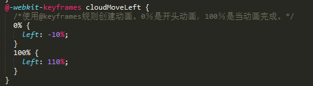

Web程序设计课程答辩
项目:
扫码乘车
成员:
刘庆
许承瑶
支付宝重磅上线杭州通电子公交卡功能,恰恰能很好地解决公交卡遗失或余额不足问题初步构建
- 架构进度条
- 页面完善
- 添加素材
由此，我们遇到第一个问题，进度条
这里就考虑到bootstrap的使用
$(document).ready(function(){ $('.carousel').carousel( { "pause":"false", "interval":20000 } );
$('.carousel').on('slide.bs.carousel', function (event) { var tag = $(event.relatedTarget).attr("tag"); var progress = $(event.relatedTarget).attr("progress"); $('#img_home').attr("src", "images/home.png"); ......... $('#img_' + tag).attr("src", "images/" + tag + "_selected.png"); $("#progress").animate({width: progress, left: (progress / 2) - 400}, 500); playAnimation(tag); });
由于页面的简洁，我们决定增加趣味小动画
虽然一点都不简单!!


THE END
Thanks
- 演示